Timetable/Availability
Kagawa/Tokushima ⇔ Tokyo/Shinjuku/Yokohama/Tokyo Disneyland®
Kotobus tickets will be released 03 months in advance
◆ Premium 3 Fare
| Schedule A | Schedule B | Schedule C | Schedule D | Schedule E | Schedule F | |
|---|---|---|---|---|---|---|
| Normal fare |
¥8,900 | ¥9,900 | ¥10,400 | ¥11,400 | ¥12,400 | ¥13,400 |
| Early 7 | ¥7,700 | ¥8,700 | ¥9,200 | ¥11,400 | ¥12,400 | ¥13,400 |
| Early 21 | ¥6,900 | ¥7,900 | ¥8,400 | ¥11,400 | ¥12,400 | ¥13,400 |
◆ Super Seat fare
| Schedule A | Schedule B | Schedule C | Schedule D | Schedule E | Schedule F | |
|---|---|---|---|---|---|---|
| Normal fare |
¥7,900 | ¥8,900 | ¥9,400 | ¥10,900 | ¥11,900 | ¥12,900 |
| Early 7 | ¥6,700 | ¥7,700 | ¥8,200 | ¥10,900 | ¥11,900 | ¥12,900 |
| Early 21 | ¥5,900 | ¥6,900 | ¥7,400 | ¥10,900 | ¥11,900 | ¥12,900 |

- 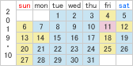
- 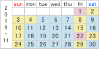
- 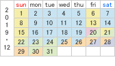
- 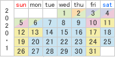
- 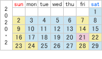
- 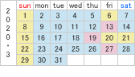
Discount
Seat Lineup
-
Premium 3
Your privacy is our utmost priority
-

- 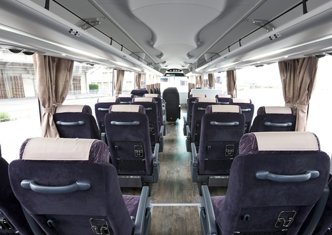
- 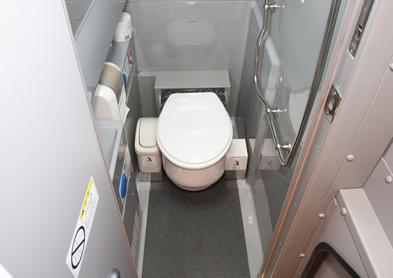
- 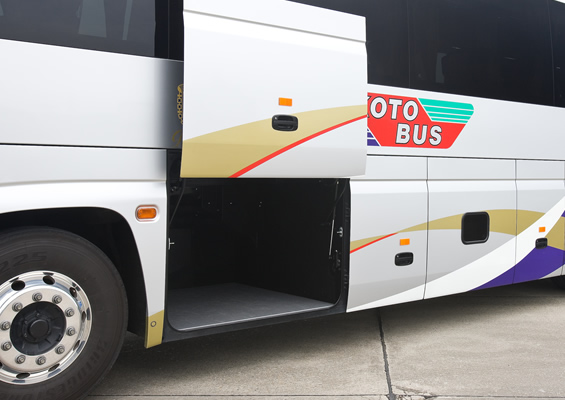
Super Seat
Better equipped with toilets
-

- 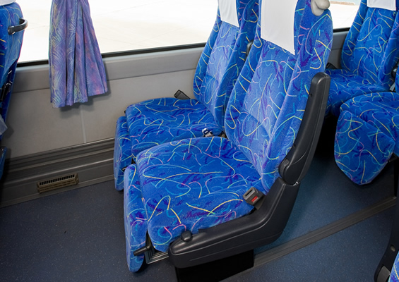
- 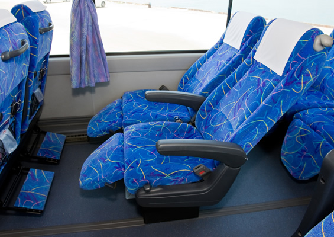
- 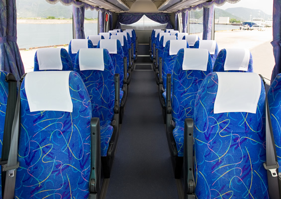
Super Seat Value
A spacious front and backspace at your own disposal
-
Standard
At a reasonable price!


Timetable
Please click on the name of a boarding/arrival location for a visual map
From Shikoku
| 702便 704便 |
706便 | |
|---|---|---|
| KS琴平 | 18：58 | 18：58 |
| こんぴら参道口 | 19：04 | 19：04 |
| JR宇多津駅南口南 | 19：41 | 19：41 |
| JR高松駅 | 20：30 | 20：30 |
| KS高松 | 20：42 | 20：42 |
| 高松中央IC北 | 20：55 | 20：55 |
| 高速三木BS | 21：01 | 21：01 |
| 高速志度BS | 21：06 | 21：06 |
| 高速津田BS | 21：14 | 21：14 |
| 高速大内BS | 21：19 | 21：19 |
| 高速引田BS | 21：26 | 21：26 |
| 徳島駅 | 22：08 | 22：08 |
| KS鳴門IC | 22：50 | 22：50 |
| ↓ | ↓ | ↓ |
| YCAT(JR横浜駅東口) | 6：15 | － |
| バスタ新宿4F | 7：20 | － |
| 丸ノ内鍛冶橋駐車場 | 7：48 | 7：48 |
| Tokyoディズニーランド® | 8：10 | － |
From Kanto
| 701便 703便 |
713便 705便 |
|
|---|---|---|
| Tokyoディズニーランド® | 20：00 | － |
| 丸ノ内鍛冶橋駐車場 | 20：40 | 20：40 |
| バスタ新宿4F | 21：25 | － |
| YCAT(JR横浜駅東口) | 22：15 | － |
| ↓ | ↓ | ↓ |
| KS鳴門IC | 6：10 | 6：10 |
| JR徳島駅前 | 6：36 | 6：36 |
| 高速引田BS | 7：13 | 7：13 |
| 高速大内BS | 7：20 | 7：20 |
| 高速津田BS | 7：25 | 7：25 |
| 高速志度BS | 7：33 | 7：33 |
| 高速三木BS | 7：38 | 7：38 |
| 高松中央IC北 | 7：44 | 7：44 |
| KS高松 | 8：06 | 8：06 |
| JR高松駅 | 8：22 | 8：22 |
| JR宇多津駅南口南 | 9：12 | 9：12 |
| 琴平町営西駐車場 | 9：45 | 9：45 |
| KS琴平 | 9：52 | 9：52 |
* Kotobus's operating bus companies have voluntary insurance.
NEWS
運行状況とInformation
運行状況
- 2019年10月24日 15:00
- 15：00現在、運休等の情報はございません。...
- 2019年10月23日 15:38
- 15：00現在、運休等の情報はございません。...
- 2019年10月22日 15:00
- 15：00現在、運休等の情報はございません。...
Information
- 2019年10月11日 17:00
- 【運休時の返金方法について】 運休時のご返金については以下のように手続きさせていただきます。 ＜カー...
ご案内
- 2019年8月30日 09:00
- 【夜間通行止のご案内】期間：9/9（月）～10/30（水）詳しくは下記をご覧ください。 下記の日程で...